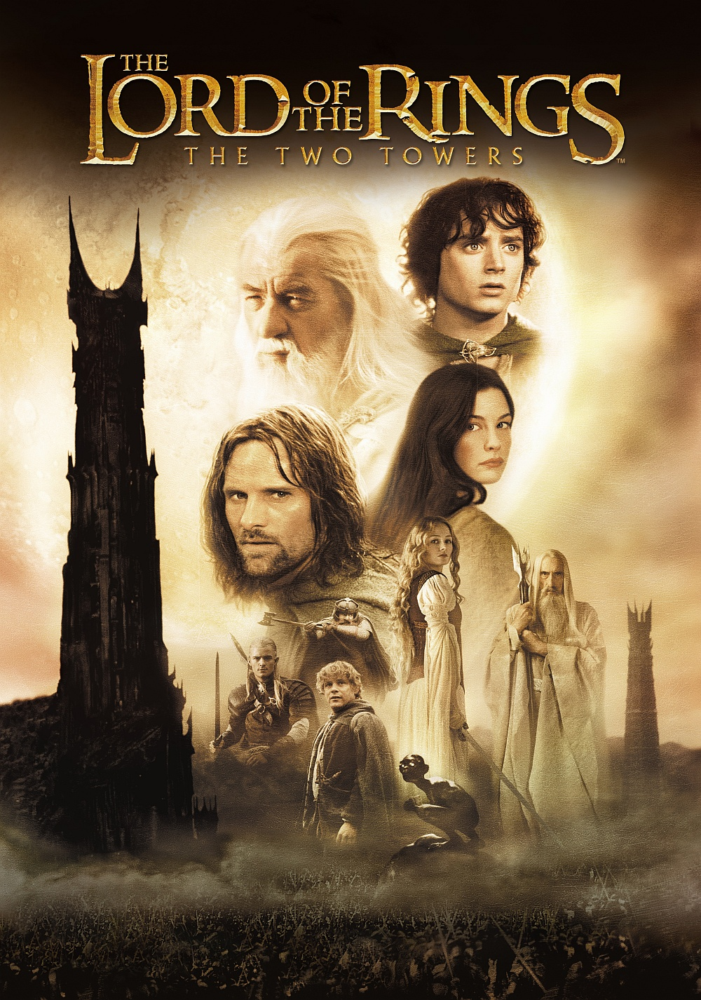
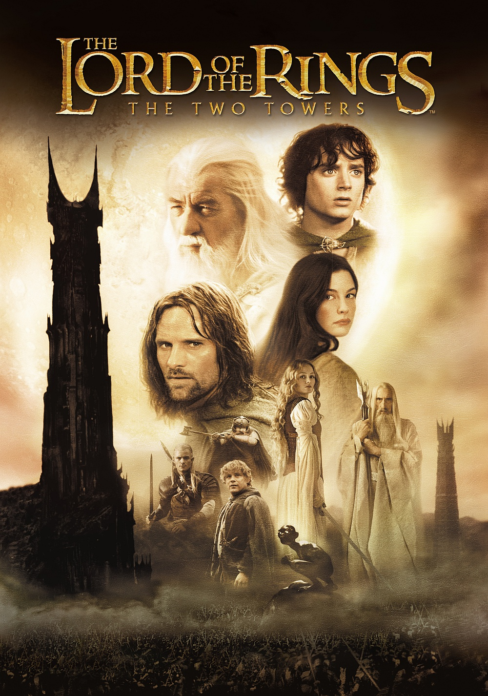
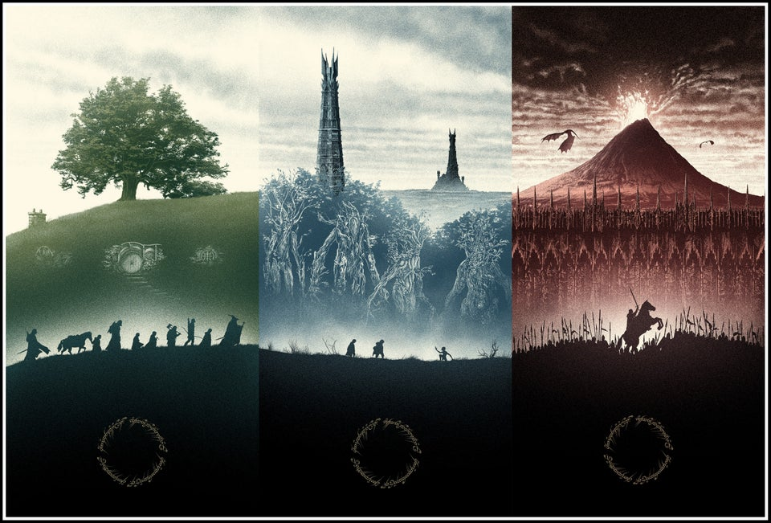

Historia powieści
Władca Pierścieni (ang. The Lord of the Rings) – powieść J.R.R. Tolkiena, której akcja rozgrywa się na stworzonym przez niego fikcyjnym kontynencie – Śródziemiu. Jest ona kontynuacją innej opowieści tego samego autora zatytułowanej Hobbit, czyli tam i z powrotem. Była pisana z przerwami między 1937 a 1949 rokiem, także w trakcie trwania II Wojny Światowej. Szybko stała się jedną z najpopularniejszych i najlepiej sprzedających się książek w historii literatury (około 150 milionów sprzedanych egzemplarzy).
Władca Pierścieni często mylnie nazywany jest trylogią. Tak naprawdę to powieściowa całość podzielona na sześć ksiąg. Ze względu na swoją dużą objętość został wydany w trzech tomach, głównie pod wpływem nacisków wydawcy. Nie było to jednak oryginalne zamierzenie Tolkiena.
Tytuł utworu nawiązuje do głównego antagonisty w opisanej historii - Ciemnego Władcy, Saurona, pana i twórcy zaginionego Jedynego Pierścienia, mającego moc kontrolowania pozostałych Pierścieni Władzy, będących w posiadaniu przedstawicieli trzech ras zamieszkujących Śródziemie i tym samym dającego mu władzę nad całym kontynentem oraz czyniąc go Władcą Pierścieni.
Filmy
 


Władca Pierścieni został przeniesiony na ekran dwa razy. W latach 1977-1979 firma Warner Brothers podjęła próbę ekranizacji książki w postaci filmu animowanego. Podjął się tego znany twórca animacji filmowych Ralph Bakshi, który nakręcił pierwszą część filmu Władca Pierścieni, obejmującą ok. półtora tomu powieści, ale wskutek miernego powodzenia filmu, ekranizacja nie została ukończona.
Największym problemem z ekranizacją filmu było dobre przedstawienie świata opisanego przez Tolkiena. Dopiero pojawienie się rozwiniętej grafiki komputerowej pozwoliło na nakręcenie filmu z prawdziwego zdarzenia.
Po niemalże 20 latach od pierwszej próby przeniesienia dzieła Tolkiena na duży ekran, nowozelandzki reżyser Peter Jackson postanowił zekranizować Władcę Pierścieni po raz drugi. Kolejne części tego trzytomowego dzieła ukazały się w kinach, w około rocznych odstępach, w 2001, 2002 i 2003 roku, bijąc rekordy oglądalności. W 2001 roku (w Polsce w lutym 2002) na ekrany wszedł film Władca Pierścieni: Drużyna Pierścienia. Następna część – Władca Pierścieni: Dwie wieże, ukazała się w 2002 (w Polsce w styczniu 2003). Ostatnia – Władca Pierścieni: Powrót króla, weszła na ekrany 16 grudnia 2003 (w Polsce 1 stycznia 2004) i zdobyła 11 statuetek nagród Amerykańskiej Akademii Filmowej, w tym za najlepszy film roku 2003.
Trzy Pierścienie dla królów elfów pod otwartym niebem, Siedem dla władców krasnali w ich kamiennych pałacach, Dziewięć dla śmiertelników, ludzi śmierci podległych, Jeden dla Władcy Ciemności na czarnym tronie W Krainie Mordor, gdzie zaległy cienie, Jeden, by wszystkimi rządzić, Jeden, by wszystkie odnaleźć, Jeden, by wszystkie zgromadzić i w ciemności związać W Krainie Mordor, gdzie zaległy cienie.J.R.R. Tolkien
Wszak ten, kto na wojnie pierwszy uderzy dostatecznie mocno, może już nie potrzebować zadawać drugiego ciosu.J.R.R. Tolkien
Połowy z was nie poznałem przynajmniej w połowie tak dobrze, jak powinienem, a mniej niż połowę z was lubię o połowę mniej, niż żeście sobie na to zasłużyli.J.R.R. Tolkien